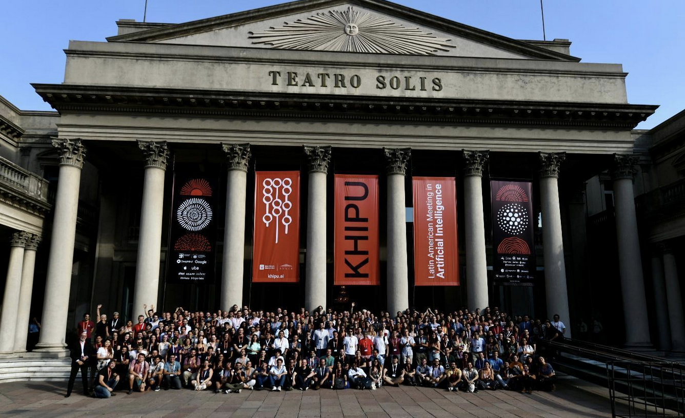

My experience at the Khipu 2023 conference
This year, at the Universidad de la República in Uruguay, Khipu, the Latin American conference on AI took place. Over three days in March, talks, workshops, and poster sessions were held in an excellently organized environment. Participants, mostly from the Latin American academic community, engaged with speakers from private sector research areas to discuss the development and impact of artificial intelligence in the region.

Application
Following the trend of making application processes for events, conferences, and scholarships more accessible, inclusive, and user-friendly, the application process for Khipu 2023 was remarkably simple. The application was submitted through a Google Form, where applicants had to provide their profile information, upload their CV, and submit a letter of recommendation.
The form specifically asked about the applicant’s contributions to their local Machine Learning and Data Science community and included sections to share links to a personal website, GitHub profile, and community activities.
The event offered scholarships for both accommodation and travel, managed efficiently and accessibly, particularly for individuals from countries that might face currency exchange or tax barriers when receiving such support.
Some highlights
Bias and AI Impact
[Panel] Ethics and Social Impacts in AI. Laura Alonso Alemany, Andrés Morales, Sasha Luccioni, Laura Ación, Paola Ricaurte
[Talk] Sara Hooker, “The Myth of the Perfect Model”.
[Workshop] Fundación Vía Libre + Metadocencia, “Social Impacts of Artificial Intelligence”
Biblioteca EDIA https://github.com/fvialibre/edia
NLP
[Workshop] Huggingface, “Building ML in an open and collaborative way with Hugging Face ecosystem”
[Workshop] “Attention and Transformers”
[Póster] Mariela Rajngewerc, Laura Ación, Laura Alonso Alemany, “Analysis of fairness metrics for anonymization in electronic health records“
[Póster] “De-identification of Spanish Healthcare free text: not fully reliable but far better than nothing”
[Research group] Natural Language Processing Group at Center for Mathematical Modeling - University of Chile. Transdisciplinary group of researchers working on the creation of a clinical text mining unit in Chile.Link con recursos